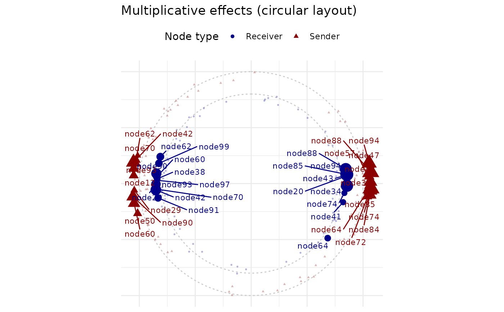
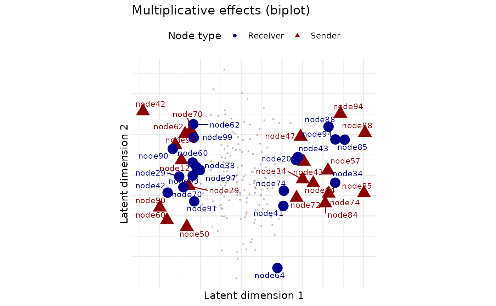
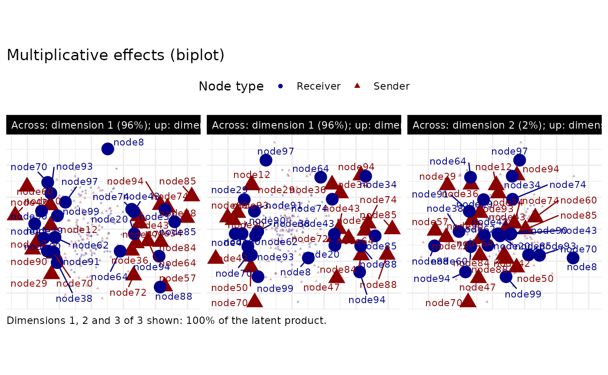
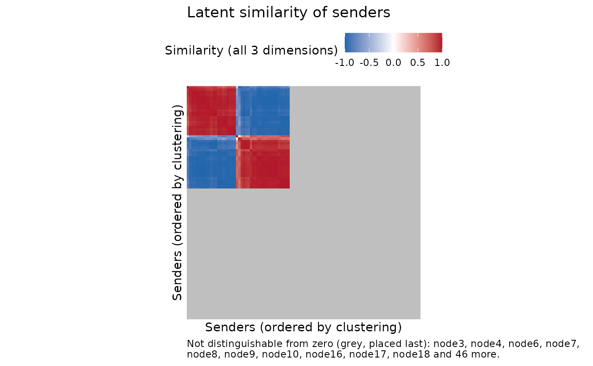

Visualizes the multiplicative effects (U and V) of an AME or LAME model: maps of two latent dimensions at a time, or a heatmap that uses every fitted dimension. These latent factors capture network structure beyond what is explained by covariates and additive effects, including clustering, transitivity, and other higher-order dependencies.
Usage
uv_plot(
fit = NULL,
Y = NULL,
U = NULL,
V = NULL,
row.names = NULL,
col.names = NULL,
layout = c("circle", "biplot", "heatmap"),
dims = NULL,
nodes = c("both", "row", "col"),
vscale = 0.8,
show.edges = FALSE,
edge.alpha = 0.3,
node.size = "magnitude",
label.nodes = TRUE,
label.size = 3,
show.usernames = NULL,
sender.color = "darkred",
receiver.color = "darkblue",
colors = NULL,
title = NULL,
time_point = NULL,
plot_type = c("snapshot", "trajectory", "faceted"),
show_arrows = TRUE,
highlight = NULL
)Arguments
- fit
An object of class "ame" or "lame" containing multiplicative effects, or a network matrix Y if U and V are provided separately
- Y
Network matrix (only needed if fit is not provided)
- U
Matrix of sender latent factors (extracted from fit if not provided)
- V
Matrix of receiver latent factors (extracted from fit if not provided)
- row.names
Names for row nodes (defaults to rownames of Y or U)
- col.names
Names for column nodes (defaults to colnames of Y or V)
- layout
Character string specifying layout:
"circle"(default),"biplot"or"heatmap"- dims
Which latent dimensions to draw in the circle and biplot layouts: distinct whole numbers within the fitted rank. The default is the first two (the single one when the fitted rank is 1). Two values draw one map; three or four values draw every pair of them as panels. Dynamic fits take exactly two values. The heatmap uses every dimension and takes no
dims.- nodes
Which side to draw:
"both"(default),"row"(row actors; senders in a one-mode network) or"col"(column actors; receivers). A symmetric fit has one set of positions: the maps take only"both", and the heatmap takes"row"or"col"(the same similarity of its nodes) or"both".- vscale
Scaling factor for V positions relative to U (default 0.8)
- show.edges
Logical; if TRUE, show network edges (default FALSE)
- edge.alpha
Transparency for edges (default 0.3)
- node.size
Node size: a numeric value,
"degree"to scale by degree (needsY), or"magnitude"(the default) to scale by the length of each latent vector- label.nodes
Logical; if TRUE, show node labels (default TRUE)
- label.size
Size of node labels (default 3)
- show.usernames
Which nodes to label: an integer (that many nodes, ranked by latent magnitude when available, else by degree),
TRUEfor all, a character vector of actor names, orNULLfor the default- sender.color
Color for sender/row nodes (default "darkred")
- receiver.color
Color for receiver/column nodes (default "darkblue")
- colors
Optional vector of colors for nodes (e.g., for communities)
- title
Optional title for the plot
- time_point
For dynamic UV, which time point to plot (default: last). Can be numeric index or "average" for time-averaged positions (not for the heatmap, which draws one period)
- plot_type
For dynamic UV: "snapshot" (single time), "trajectory" (evolution), "faceted" (grid of time points). For static UV, this is ignored.
- show_arrows
For trajectory plots, whether to show directional arrows
- highlight
Optional character vector of actor names to highlight on a
plot_type = "trajectory"plot. Highlighted actors are coloured with the ColorBrewer Dark2 palette; all other actors are rendered in grey at lower alpha. Ignored for static or snapshot plots.
Details
The multiplicative effects in AME models provide a low-rank representation of network structure through latent factors:
- U matrix
Sender-specific latent positions (row factors)
- V matrix
Receiver-specific latent positions (column factors)
- UV' product
Captures dyad-specific effects beyond additive terms
The visualization can show:
- Circular layout
Default layout placing nodes on a circle with latent positions shown as deviations
- Biplot layout
Shows U and V positions directly in latent space
- Heatmap layout
Uses every fitted dimension. With
nodes = "row"or"col"it shows the similarity of the nodes of that side (seelatent_similarity), ordered by clustering; withnodes = "both"it shows the latent product, rows against columns. The latent product is centred, so positions are relative to the average node of each side: a node with no structure of its own sits opposite the average pattern rather than at the origin, and several such nodes look similar to each other.- Network overlay
Optional display of actual network ties
A map shows two dimensions. When the fit has more than two, the axis labels
give each dimension's share of the latent product and a caption names the
dimensions shown; three or four values of dims draw every pair of
them as panels of one plot. When a side has more than 50 nodes and
show.usernames is not set, only its 20 nodes with the longest
position vectors in the plotted dimensions are labelled and the rest are
drawn as small light points. The biplot of a bipartite fit rescales the
row positions for display so that their root-mean-square radius equals
that of the column positions, and says so in the caption.
Interpretation (this is an eigenmodel, not a latent-distance model):
The latent contribution to a tie i -> j is the inner product u_i' v_j: sender and receiver vectors that align (small angle, large magnitude) raise the tie propensity, opposed vectors lower it. Euclidean distance between plotted points is not the operative quantity.
Actors with similar sender (or receiver) vectors have similar connection patterns; clustering of vectors indicates community structure.
Examples
# \donttest{
# Fit an AME model with multiplicative effects
data(YX_nrm)
# chains = 1 keeps the example short; the default runs two chains and compares them
fit <- ame(YX_nrm$Y, Xdyad = YX_nrm$X, R = 2,
nscan = 100, burn = 10, odens = 1, verbose = FALSE, chains = 1)
# Basic visualization
uv_plot(fit)

# Use biplot layout
uv_plot(fit, layout = "biplot")

# three dimensions: every pair as a panel, and the heatmap of all of them
fit3 <- ame(YX_nrm$Y, Xdyad = YX_nrm$X, R = 3,
nscan = 100, burn = 10, odens = 1, verbose = FALSE, chains = 1)
uv_plot(fit3, layout = "biplot", dims = 1:3)

uv_plot(fit3, layout = "heatmap", nodes = "row")

# }